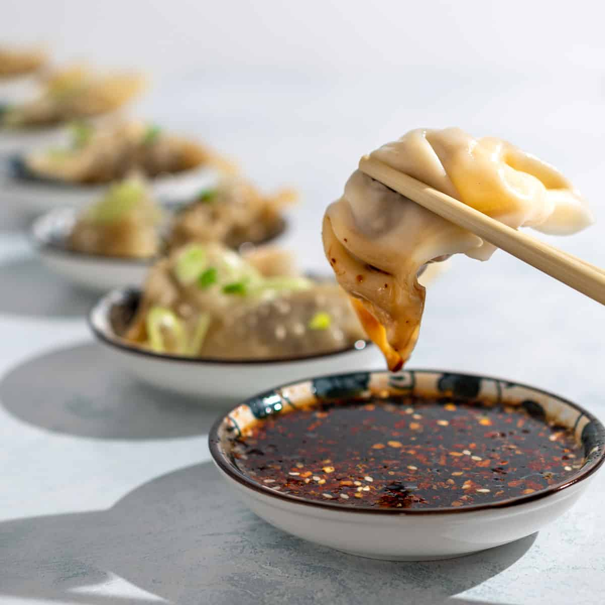

The best gyoza sauce recipe

Description
Gyoza sauce is a slightly-spicy Japanese dipping sauce for potstickers or spring rolls.
Ingredients
- ½ cup rice vinegar
- ½ cup low-sodium soy sauce
- ⅓ cup thinly sliced green onions
- 1 garlic clove, minced
- 1 teaspoon sesame oil
- ½ teaspoon crushed red pepper flakes
- ½ teaspoon minced fresh ginger root
Steps
- Whisk together rice vinegar, soy sauce, green onions, garlic, sesame oil, red pepper flakes, and ginger in a bowl. Let sit for 15 minutes before serving.
- Store covered in the refrigerator for up to 1 week.